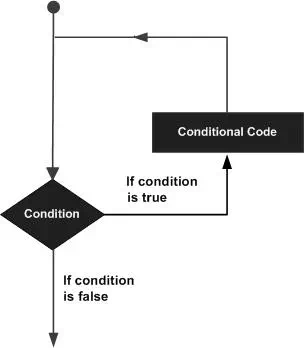

C – Loops
You may encounter situations, when a block of code needs to be executed several number of times. In general, statements are executed sequentially: The first statement in a function is executed first, followed by the second, and so on.
Programming languages provide various control structures that allow for more complicated execution paths.
A loop statement allows us to execute a statement or group of statements multiple times. Given below is the general form of a loop statement in most of the programming languages −

C programming language provides the following types of loops to handle looping requirements.
|
S.No. |
Loop Type & Description |
|
1 |
while loop Repeats a statement or group of statements while a given condition is true. It tests the condition before executing the loop body. |
|
2 |
for loop Executes a sequence of statements multiple times and abbreviates the code that manages the loop variable. |
|
3 |
do...while loop It is more like a while statement, except that it tests the condition at the end of the loop body. |
|
4 |
nested loops You can use one or more loops inside any other while, for, or do..while loop. |
Loop Control Statements
Loop control statements change execution from its normal sequence. When execution leaves a scope, all automatic objects that were created in that scope are destroyed.
C supports the following control statements.
|
S.No. |
Control Statement & Description |
|
1 |
break statement Terminates the loop or switch statement and transfers execution to the statement immediately following the loop or switch. |
|
2 |
continue statement Causes the loop to skip the remainder of its body and immediately retest its condition prior to reiterating. |
|
3 |
goto statement Transfers control to the labeled statement. |
The Infinite Loop
A loop becomes an infinite loop if a condition never becomes false. The for loop is traditionally used for this purpose. Since none of the three expressions that form the 'for' loop are required, you can make an endless loop by leaving the conditional expression empty.
#include<stdio.h>
int main (){
for(;;){
printf("This loop will run forever.\n");
}
return0;
}
When the conditional expression is absent, it is assumed to be true. You may have an initialization and increment expression, but C programmers more commonly use the for(;;) construct to signify an infinite loop.
NOTE − You can terminate an infinite loop by pressing Ctrl + C keys.